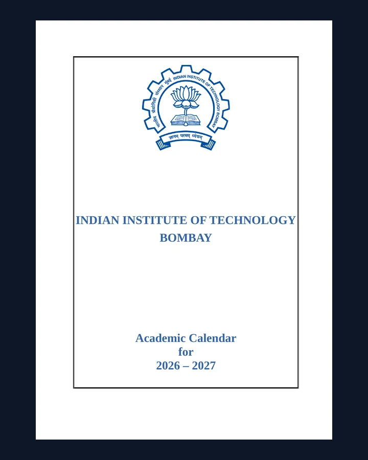

ASC Registration & Course Guide
Step-by-step help for LDAP setup and course registration.
Notices · Documents · Deadlines
Official circulars and student guides in one searchable place. Preview a file here or open the original PDF.

Step-by-step help for LDAP setup and course registration.
Venue and department-wise verification schedule.
Fee-payment schedule and new-entrant structures.
Semester dates, examinations and deadlines.
No matching documents.
resources/ folder.assets/resources/.resources-data.js. The search, filters and preview will update automatically.